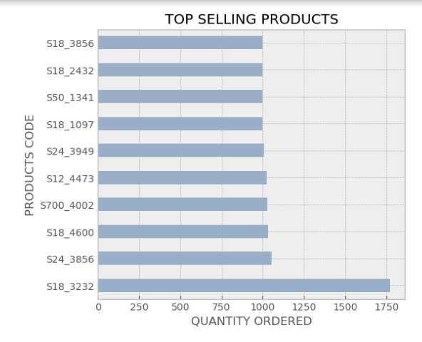
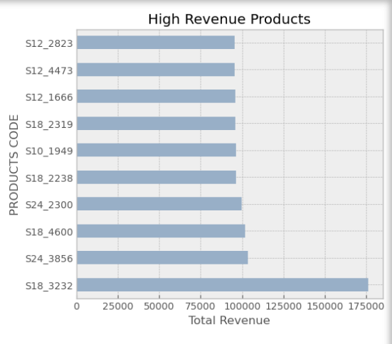
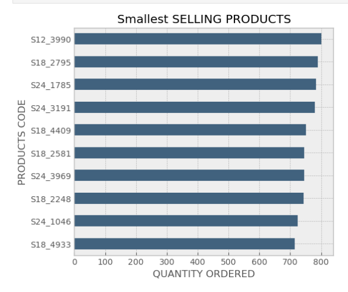
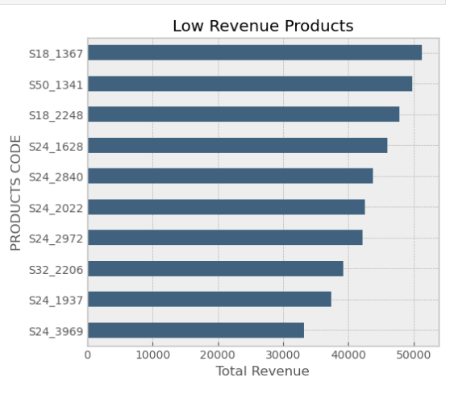
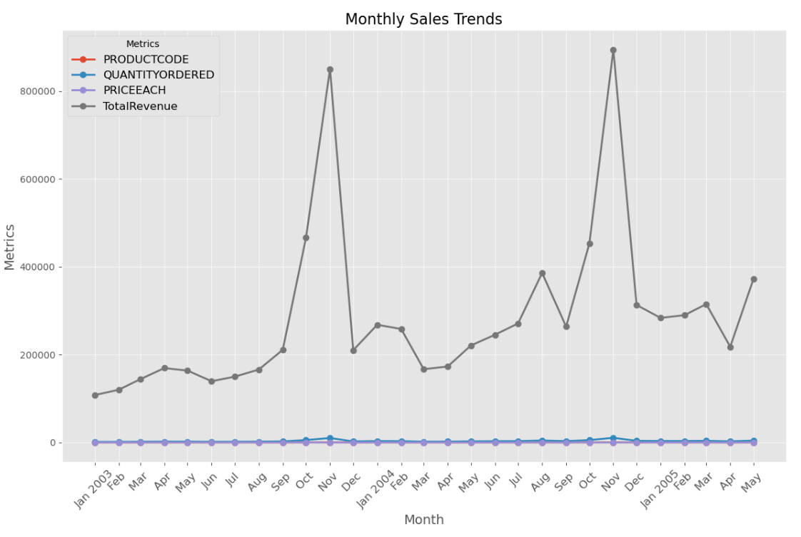
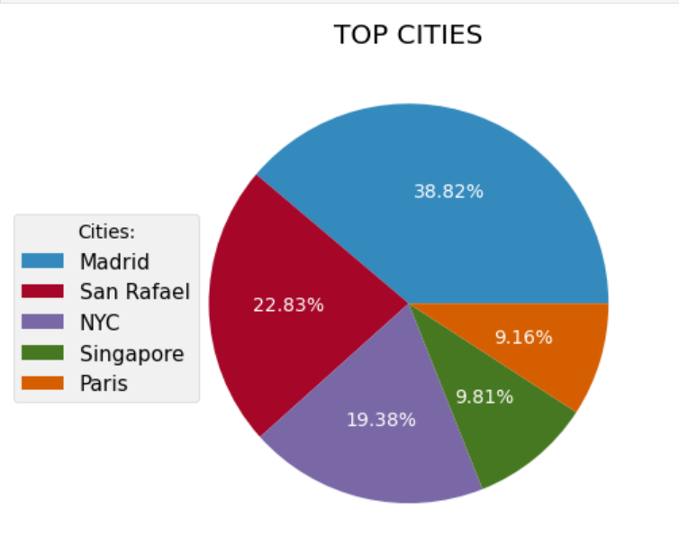

Top 10 Selling Products
Top 10 Revenue Products
نلاحظ أن المنتج S18_3232 يتصدر القائمة من حيث المبيعات والإيرادات، مما يجعله الأكثر طلبًا في السوق. للاستفادة القصوى من هذا النجاح، يمكن اتخاذ الخطوات التالية:
- تعزيز التسويق: - زيادة الحملات التسويقية المستهدفة لهذا المنتج، خاصة من خلال منصات التواصل الاجتماعي، لرفع مستوى الوعي وزيادة المبيعات.
- مراقبة المخزون: - التأكد من توفر كميات كافية من المنتج في المخازن لتلبية الطلب المتزايد ومنع أي نقص.
- توسيع خط الإنتاج: - التفكير في توسيع مجموعة المنتجات المرتبطة أو تقديم إصدارات جديدة من المنتج S18_3232 لجذب شريحة أوسع من العملاء.
أما بالنسبة للمنتجات الأخرى التي تحقق مبيعات جيدة وإيرادات جيدة، إلا أن أدائها لا يتناسب مع مستوى منتج S18_3232 (حيث أن مبيعاتها تقريباً نصف مبيعاته)، فإنه يتعين علينا دراسة عوامل نجاح S18_3232. قد تكون لدى هذا المنتج ميزات فريدة أو أنه يتأثر بعوامل خارجية معينة. فهم هذه العوامل سيمكننا من تحسين أداء المنتجات الأخرى واستغلال نقاط القوة لديه لتحقيق نتائج مماثلة.
Last 10 Selling Products
Last 10 Revenue Products
نلاحظ من الصورة السابقة أن لدينا أسوء عشر منتجات من ناحية المبيع والايردات ويجب أن نقوم ببعض الخطوات لتحسين بيع هذه المنتجات منها:
- تحليل السوق وفهم احتباجات الزبائن لهذه المنتجات.
- تحسين جودة وميزات المنتج وفهم مشاكلها لتجاوزها أو إعادة تصميم كاملة للمنتج.
- وضع سعر منافس مقارنة بالمنتجات البديلة في السوق.
- من المحتمل أنه يحتاج الى استراتيجية تسويق جديدة.
- 5- تقديم عروضات أو تخفيضات لتحفيز الشراء.
Monthly Sales trendy
الاستنتاجات المستخلصة :
نلاحظ من خلال المخطط السابق، أن خط الإيرادات يشهد تزايدًا مستمرًا مع مرور الوقت، مما يدل على وجود نمو مستدام. ومع ذلك، هناك تقلبات شهرية ملحوظة، حيث يسجل شهرا أكتوبر ونوفمبر أعلى مستويات للإيرادات، بينما تكون الإيرادات في الأشهر الأخرى أقل. قد تكون هذه الظاهرة مرتبطة بمواسم معينة، فترات العطلات، أو حتى تغييرات بسيطة في الأسعار، وكلها عوامل قد تؤثر في الإيرادات. لذا، من المهم استغلال الفرص المتاحة خلال شهري أكتوبر ونوفمبر لتحقيق أقصى ربح ممكن. أما بالنسبة لبقية الأشهر، فيمكن تنفيذ عروض وتخفيضات مناسبة لجذب العملاء وزيادة المبيعات.
Top 5 Revenue Cities
التوصيات لزيادة المبيعات في المدن الأخرى :
- تحليل السوق المحلي: - دراسة احتياجات وتفضيلات العملاء في كل مدينة لوضع استراتيجيات مخصصة.
- استهداف عروض ترويجية: - تقديم خصومات وعروض خاصة لجذب العملاء في المدن الضعيفة، مثل الشحن المجاني أو التخفيضات على المنتجات الأكثر طلباً.
- زيادة الحملات الإعلانية المحلية: - تنفيذ حملات إعلانات مستهدفة عبر وسائل التواصل الاجتماعي ومحركات البحث، مع التركيز على السكان المحليين.
- التعاون مع مؤثرين محليين: - الشراكة مع شخصيات مؤثرة في المدن المعنية للترويج للمنتجات بطرق جذابة.
- تحسين خدمة العملاء: - توفير دعم عملاء متميز واستجابة سريعة لاستفسارات وشكاوى العملاء لتعزيز الولاء وزيادة الشراء.
- تجربة تسوق سهلة ومريحة: - تحسين الموقع الإلكتروني وتجربة المستخدم لجعل عملية الشراء أكثر سهولة.
- تفعيل التسويق بالمحتوى: - نشر محتوى يتحدث عن فوائد المنتجات وتطبيقاتها في الحياة اليومية للمساعدة في جذب العملاء.
- مراقبة الأداء بشكل مستمر: - متابعة نتائج المبيعات في المدن المنخفضة باستمرار وتعديل الاستراتيجيات بناءً على البيانات.
يمكننا تقديم التوصيات بشكل عام للشركة بناءً على ماسبق:
- التركيز على المنتجات الأعلى مبيعًا: - ينبغي التركيز على المنتجات التي تحقق أعلى عائدات وتبيع كميات كبيرة، وخاصة تلك ذات الأسعار المرتفعة، حيث تشير إلى جدوى اقتصادية عالية.
- تحسين تسويق المنتجات ذات الطلب الجيد: - بالنسبة للمنتجات التي تحقق مبيعات جيدة، لكن بسعر قطعة منخفض، يجب تحسين استراتيجيات التسويق لزيادة قيمة المبيعات.
- تقديم تخفيضات على المنتجات ذات المبيعات المنخفضة: - بالنسبة للمنتجات ذات سعر الوحدة المرتفع ولكن مع مبيعات ضعيفة، من الحكمة مراجعة استراتيجيات التسويق وتقديم عروض خاصة لزيادة المبيعات.
- التوسع في الفئات الناجحة: - إذا كانت هناك فئات معينة من المنتجات تحقق أداءً ممتازًا، ينبغي التفكير في توسيع خطوط الإنتاج في تلك الفئات أو تطوير منتجات جديدة تلبي الطلب الحالي.